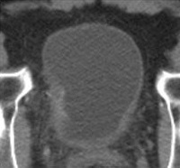

Ficha del catálogo
Tumor vesical
- Sistema
- Urinario
- Modalidad
- TC
- Región
- Pelvis, vejiga
- Dificultad
- Avanzado
El tumor vesical más frecuente es el carcinoma urotelial, que se origina en el revestimiento de la vejiga y se relaciona estrechamente con el tabaquismo y la exposición a aminas aromáticas. La forma de presentación típica es la hematuria macroscópica indolora en pacientes mayores de sesenta años. Su comportamiento oscila entre lesiones superficiales recurrentes y tumores músculo invasivos de mal pronóstico.
Técnica
La urotomografía con fase excretora es el estudio de elección para el estudio de hematuria, ya que valora simultáneamente vejiga, uréteres y sistemas colectores. La resonancia magnética multiparamétrica con difusión ofrece la mejor evaluación de la invasión de la capa muscular. La cistoscopia con biopsia sigue siendo el patrón de referencia diagnóstico.
Qué observar
- Engrosamiento focal o masa polipoide de la pared vesical
- Realce precoz de la lesión respecto a la pared vesical normal
- Integridad o interrupción de la capa muscular y de la grasa perivesical
- Hidronefrosis por afectación de los meatos ureterales
- Lesiones sincrónicas en uréteres o pelvis renal
- Adenopatías pélvicas y retroperitoneales
Hallazgos
Se aprecia una masa sésil o pediculada que protruye hacia la luz vesical, con realce tras el contraste más precoz e intenso que el de la pared normal. En fase excretora aparece como defecto de repleción dentro de la orina opacificada. La extensión extravesical se manifiesta por borramiento de la grasa perivesical, mientras que en resonancia la difusión restringida delimita el tumor y el pedículo submucoso.
Perlas
El punto que cambia el tratamiento es determinar si el tumor invade la capa muscular, porque separa el manejo endoscópico conservador de la cistectomía o el tratamiento multimodal. La resonancia multiparamétrica, valorando el tallo submucoso de baja señal en T2 y en difusión, es la herramienta más fiable para esa distinción por imagen.
Diagnóstico diferencial
- Cistitis crónica o posradioterapia
- Produce engrosamiento parietal difuso y simétrico, sin masa focal ni realce nodular precoz.
- Coágulo intravesical
- No realza tras el contraste y se moviliza con los cambios de posición del paciente.
- Hipertrofia prostática con lóbulo medio
- Se identifica una impronta lisa en la base vesical en continuidad con la próstata, no una masa mucosa.
- Endometriosis vesical
- Afecta la cúpula posterior en mujeres en edad fértil, con síntomas cíclicos y focos hemorrágicos hiperintensos en T1 con saturación grasa.
Simuladores
- Coágulos adheridos a la pared
- Trabeculación vesical por obstrucción crónica
- Pliegues de una vejiga insuficientemente distendida
Por modalidad
- TC
- Permite el estudio completo del urotelio en fase excretora, detecta lesiones sincrónicas y estadifica la enfermedad ganglionar y a distancia.
- US
- Detecta masas vesicales con vejiga bien repleccionada y muestra vascularización del pedículo con Doppler, sin capacidad para valorar la invasión muscular.
Protocolo
Urotomografía con fase simple, fase nefrográfica y fase excretora a los 8 a 12 minutos, con hidratación y en ocasiones diuréticos para mejorar la opacificación. Es esencial una repleción vesical adecuada para evitar falsos engrosamientos. En resonancia se emplean T2 de alta resolución en tres planos, difusión con valores b altos y secuencias dinámicas con contraste.
Clasificación
La estadificación TNM diferencia el tumor no músculo invasivo, que comprende las categorías Ta, Tis y T1 limitadas a mucosa y lámina propia, del tumor músculo invasivo T2. Los estadios T3 y T4 implican extensión a la grasa perivesical y a órganos vecinos. La categorización estructurada por resonancia agrupa el riesgo de invasión muscular en cinco niveles crecientes.
Errores frecuentes
- Explorar con la vejiga vacía y confundir pliegues normales con engrosamiento tumoral
- Interpretar un coágulo como tumor por no comprobar la ausencia de realce
- Limitar el estudio a la vejiga y no revisar el resto del urotelio en busca de lesiones sincrónicas

tumor vesical carcinoma urotelial hematuria urotomografía invasión muscular fase excretora estadificación